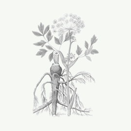
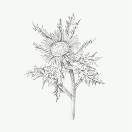
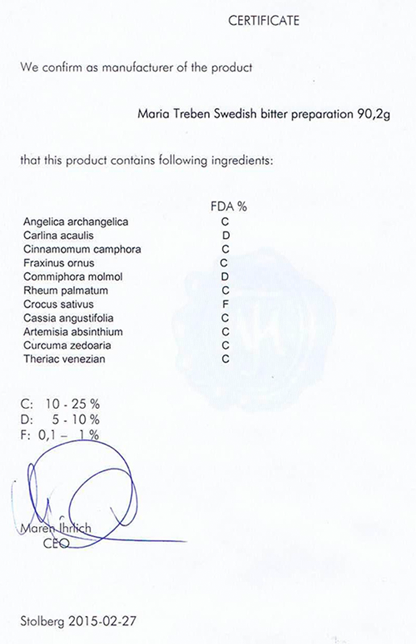

Бальзам "Swedish bitter"
Уникальные свойства бальзама

Бальзам
"Swedish bitter"
Не имеет аналогов в мире по оздоровительной силе и широте лечебных свойств
Узнать подробнее о бальзамеНебольшая статистика
-
1978 г.
Европейцы используют бальзам "Swedish Bitter" еще с 1978 года
-
104 года
104 года прожил автор бальзама
-
40 показаний
Больше 40 показаний к применению
-
24 языка
8 млн книг на 24 языках продано о бальзаме
Что из этого списка вы находите у себя
-
Сниженный тонус, не хватает энегрии
-
Прыщи, бородавки и растяжки
-
Слабая память и концентрация
-
Болеете чаще раза в год?
-
Головные боли
-
Синяки, шишки, ожоги, порезы долго не проходят
-
Плохо засыпаете и часто просыпаетесь
 Избавиться от проблем
Избавиться от проблем
Даже в странах с очень высоким уровнем медицины таких как Германия и Австрия, бальзам Шведская Горечь проается в каждой аптеке
Получить средство-панацею к себе в аптечкуПочему бальзам "Swedish Bitter" завоевал такую популярность?
Вот лишь несколько причин:
-
Эффективность как при наружном, так и внутреннем применении, более 40 показаний к применению
-
Случаи излечения с помощью сбора, когда традиционная медецина не смогла помочь
-
Постоянно выявляются новые целительные свойства бальзама
-
Эффект от применения можно увидеть сразу
Что вы получите вместе с бальзамом "Swedish bitter"?
-
Сбор трав
-
Инструкция по применению
-
Сертификат качества
-

Angelica archangelica
Корень дягиля (дудника) лекарственного
-

Carlina acaulis
Колючик бесстебельный
-
Cunnamomum camphora
Натуральная камфора
-
Fraxinus ornus
Высушенный сок из ствола ясеня манного
-
Cammiphora molmol
Мирра горькая
-
?
Часть рецепта до сих пор находится в секрете
Theriak venezian
Смесь трав по рецепту Марии Трэбэн
Состав бальзама "Swedish bitter"
-
Все травы, входящие в сбор, собраны в альпийском заповеднике «Гуркталь» и имеют немецкий сертификат качества.
-
Строго выверенные пропорции каждого компонента в составе
-
Все травы в составе бальзама обладают сильным очищающим воздействием, при этом каждый из компонентов усиливает действие остальных.
-
Соединяясь вместе они создают мощный очищающий эффект. Как оказалось, именно за счет этого эффекта бальзам способен исцелять многие болезни.
Гарантия качества
Если бальзам вам не понравился, мы вернём деньги. Сразу и без лишних вопросов. Мы дорожим своей репутацией и уверены в продукте на 100%.
Этот эликсир - именно то средство, которое вам всегда захочется иметь дома в аптечке и рекомендовать своим близким.
К каждой упаковке бальзама «Swedish bitter» сы прикладываем немецкий сертификат качества.
Заказать бальзам 